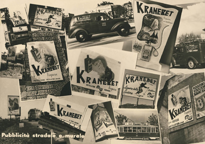

Secondo un'antica leggenda, Benevento era sede di Sabba e raduni stregoneschi che si svolgevano intorno a un noce magico. Sarà combinazione, ma proprio un noce sta al centro del cortile dell'azienda Alberti.
Ai racconti popolari della sua città si ispirò infatti Giuseppe Alberti quando, nel 1860, creò un liquore delizioso, mescolando più di settanta tipi di erbe e spezie provenienti da tutto il mondo.
Nel giro di pochi anni il piccolo stabilimento di produzione accanto alla stazione ferroviaria divenne una sede ampia e moderna. in grado di soddisfare le richieste di un mercato in continua espansione.
I primi anni del XX Secolo videro l'inaugurazione delle sedi di Tripoli, di Nizza e di Chiasso e l'aumento pressoché ininterrotto delle esportazioni.
Durante la seconda guerra mondiale, nemmeno i bombardamenti che distrussero lo stabilimento di Benevento, fermarono l'energia e l'entusiasmo della famiglia Alberti, che oggi e' giunta alla quinta generazione.
La Strega e' certamente la capofila dei distillati "fantasy" in Italia, che specie in passato, costituivano un gruppo piuttosto nutrito, con un notevole mercato di vendita.
Le permissive leggi italiane, permisero a molte ditte concorrenti di copiarne parzialmente il nome e la grafica.
Riferendosi a racconti fiabeschi, la Morelli di Forcoli e la Guiducci di Ponsacco usarono il fascino delle Fate, mentre la Pe.na.bi di Roma e la Lisotti di Modena si rifecero alla mitologia, dedicando i loro prodotti alla Maga Circe e alle Ninfe.
La Argos di Bologna salì addirittura in cielo a scomodare gli Dei per il suo Elisir, la Formichini di Livorno nel suo Benevento mise in evidenza il volto stilizzato di una strega con tanto di cappello a punta, mentre la Rizzi di Padova si riallacciò alla Befana, mostrando nell'etichetta quella vecchia signora a cavalcioni di una scopa con sotto la scritta 6 gennaio.
Ma la Strega non ispirò soltanto questa serie di nomi tutti legati al mondo fantastico. Altre ditte concorrenti, cercarono di imitarne il prodotto, attraverso la grafica e il carattere di scrittura, persino nel colore.
Esempio eclatante di questa contraffazione fu la Schiavoni di Modena che battezzò il suo liquore Strenna e che mostrava in maniera spregiudicata nell'etichetta tonda, quella vicino al collo della bottiglia, uno stabilimento del tutto simile a quello dell'Alberti, imitata dalla Casoni di Finale Emilia che usò il nome di Stresa.


Ambuchi - Argos - Ballendi - Bartolomei - Bianchi - Brotto - Canciani - Caselli


Casoni - Casoni - Cocchi - Comar - Coop - Esell - Fichera


Formichini - Fornasari - F.r.a.d.a. - Fulculi - Gentile - Grappa - La Materdomini - Landy Freres


Lisotti - Marconcini - Massagli - Morelli - Mugnetti - Negabra - Obaldi - Paolucci


Paolucci - PDD - PeNaBi - Profeta - Rizzi - Roteglia - Russo Guiducci - San Marco


Schiavoni - Stampa - Tombolini - Vincenzi - Zaratine
*
- TRE STELLE -


Bergia - Buton - Casoni


Chazalettes - Cocchi - Drioli - Fabbri - Fago - Gambacciani - Guidotti


Icardi - Lisotti - Modin - Moroni - Mugnetti - Pizzolotto - Trenta - Vittone

*
- TRIPLE SEC -


Alberti - Ambuchi - Ape - Aurum - Ballor - Bardinet - Bardinet


Bols - Buton - Buton - Buton - Buton - Ciuti - Comar - Duval


Ferretti - Filippi - Inga - Inga - Landy Freres - Landy Freres - Luxardo


Martini - Martini - Milinka - Pilla - Samaja - Sarti - Sarti


Stock - Stock - Stock - Stock - Stock (esportazione) - Vlahov (Pescara) - Vlahov (Zara)


*
- VERMOUTH -


Ballor - Carpano


S.Giovanni di Dio - Cinzano - Fioretti - Gancia - Gancia
*
- VODKA -


Buton - Cinzano - Gancia - Martini & Rossi - Sarti - Stock - Trenta

*
- ZABAIONE -


Aster - Aster - Ballandi - Buton - Buton - Giarola - Illva - Landy Freres - Magnoberta


Pezziol - Pezziol - Pezziol (radio) Stock - Stock - Stock - Viterbium - Vlahov

*
- COCKTAIL DI LIQUORI -


Stampa Nocino - Morelli Coca Boliviana - Buton Coca - Buton Coca - Buton Coca Marrone -
Buton Coca Verde


Reina Cedro - Bols Gold liqueur - Illva - Zucca Vaniglia - Bergia Crema Vaniglia


Landy Freres Saint Pierre - Monasterium Tuoni & Canepa - Cora Francescano -
Francescana Nocino - Buton Gran Liquore dell'Abbadia - Manfredi Cordial caffè - M.Camaldolesi Lacrima d'Abeto - M.camaldolesi Lacrima d'Abeto


Leone - Toro Centerba - Lisotti Centerbe - Savino Erbe del Duca


Sarti St.Rhemy - Sarti St.Rhemy - Buton Marsala all'uovo - Pizzolotto Ataman


Dist. del Lario Fra Cristoforo - Mascal Macedonia - Ballor Ananas - I.D.E. Latte di Giovane - Cioli Latte di Vecchia - Parissi Liq. Etrusco


Fornasari Vitula - Pazzaglia Fragola - Stock Crema Fragola - Stock Gran Liquore - Stock Gran Liquore - Stock Orange - Evangelista Jolly - Parissi Jolly Cocktail


Leone - Cucchi Avernus - Cucchi Avernus - P.Martini Costume' - Canetta Costume' - Moroni Alkermes - Moroni Alkermes


Ramazzotti Santa Vittoria - Fabbri Merendry - Filippi Pedrocchino - Moroni William Pear


Serena Giubba Rossa - Tassoni Giallo - Dai Giallo - Murgia Cidra - Tuoca Perla d'oro - Vaccari liq. Galliano - Vaccari liq. Galliano - Vaccari liq. Galliano magnum


Fabbri Gran Bar - Ilga Groamil - Barattucci Corfino - Samajia Grandore' - Casareni Nibbio - Camel - Ferretti Silvestre


Groppi Genepy - Ali Genepy - Ballor Gong - Brotto Drupa - Benvenuti Astra - Moroni Maxov - Colli Fioriti Mister Bianco


Porzio Littorio - Ciuti Moscatella - Bocchino Prumà - Viarengo Prumà


Maristi Fiamma Verde - Achino Persico -
Lisotti Kuss - Molinari Sambuca - Dilca Sambuca - Sarti Sambuca - Fabbri Sambuca - Bols Perfait Amour
Martini Elisir d'amore


Stock Gran Liquore -
Marelli Monte Ingino - Della Porta Mandorla vera - Nardini Mandorla - De Luca Mandorlata - Bisso Carotene - Sis Crema Alkermes


I CONTRASSEGNI

LE BOTTIGLIE ESPOSTE AL MUSEO NAZIONALE DEL COLLEZIONISMO DI AREZZO


Alcolici
Gli alcolici comprendono le bevande fermentate, come il sidro, la birra, il vino e le bevande aromatizzate a base di vino, in cui la percentuale di alcol e' compresa fra 4 e 17 per cento.
Superalcolici
Nei superalcolici la percentuale di alcol etilico e' piuttosto elevata, e può giungere fino al 70 per cento. Se sono ottenuti dalla distillazione di mosti fermentati di frutta o di cereali diversi vengono chiamati distillati oppure acquaviti.
Se sono ottenuti per infusione di sostanze aromatiche in sciroppo alcolico vengono invece chiamati liquori.
Distillati
I distillati comprendono la grappa, il whisky, il kirsch, il cognac, il rhum, la vodka, il brandy, la sambuca, la tequila, il gin ecc. Per regolarne la gradazione alcolica secondo le necessità commerciali, vengono addizionati con acqua distillata.
Brandy o acquavite di vino. Viene ottenuto esclusivamente dalla distillazione a meno dell'86 per cento del volume totale del liquido, di vino o di vino alcolizzato, oppure dalla ridistillazione a meno del 96 per cento del volume totale del liquido, di un distillato di vino. Il Brandy deve avere un titolo alcolometrico effettivo minimo del 37,5 per cento in volume e non più di 200 g/metanolo su 1 ettolitro di alcol a 100 per cento in volume.
Tra i brandy più noti citiamo il cognac, una acquavite prodotta nella Charente, in Francia occidentale.
Grappa o acquavite di vinaccia. Viene ottenuta da vinacce fermentate e distillate a meno dell'86 per cento del volume totale del liquido. Deve avere un titolo alcolometrico effettivo minimo del 37,5 per cento in volume.
Liquori
Si distinguono dai distillati sia per il procedimento seguito nel prepararli (infusione, macerazione ecc.) sia per la loro composizione, generalmente più povera di alcol e più ricca di zucchero. Sono bevande infatti che contengono almeno 100 g/l di zucchero (espresso in zucchero invertito), e a cui possono essere aggiunti panna, latte o altri derivati del latte, frutta, vino, vino aromatizzato.
I 309 LIQUORIFICI PRESENTI NELLA COLLEZIONE:
Achino -
Alberti -
Aliberti -
Allasch -
Alpes -
Alpina -
Ambuchi -
Antinori -
Antoniazzi -
Ape -
Apulia -
Argos -
Arlorio -
Aster -
Aurora -
Aurum -
Bahia -
Bairo -
Baker -
Balestra -
Baliva -
Ballandi -
Ballor -
Barattucci -
Barbieri -
Bardi -
Bardinet -
Bardini -
Bassignana -
Benvenuti (Livorno) -
Benvenuti (Modena) -
Bergia -
Bertazzi -
Best Blend -
Bettitoni -
Bevilacqua -
Bianchi -
Binda -
Bisleri -
Bisso -
Boar Hound -
Bocchino -
Bols -
Bonollo -
Bonomelli -
Borghetti -
Borghi -
Borrello -
Borsari -
Bosca -
Botti -
Bracci -
Braccini -
Branca -
Brotto -
Brunetti -
Buton -
Camel -
Campari -
Camurani -
Canciani -
Canetta -
Carpano -
Casareni -
Caselli -
Casoni -
Certosini Firenze -
Cgp -
Chavin -
Chazalettes -
Chiesa -
Chinol -
Chinotecnica S.Francesco -
Cinzano -
Cioffi -
Cioli -
Ciuti -
Cocchi -
Coen -
Colli Fioriti -
Colombo -
Comar -
Coop -
Cora -
Corazzina -
Costar -
Crioli -
Cucchi -
Dai -
De Bernard -
De Luca -
Della Porta -
D'Errico -
Dilca -
Di Natale -
Distilleria del Lario -
Dolfi -
Doras -
Do-Ré -
Drioli -
Dussard -
Duval -
Ellebi -
Esell -
Evangelista -
Evelt Varesio -
Fabbri -
Fabris -
Fago -
Faled -
Fancelli -
Farmacia ospedale San Giovanni di Dio -
Ferrari -
Ferretti -
Ferrol -
Fichera -
Filippi -
Foglia -
Formichini -
Fornasari & Sicuri -
Frada -
Francescana Liquori -
Frassi -
Frassinetti -
Frigerio -
Fulculi -
Gagliano -
Galli & Morandi -
Gambacciani -
Gambarotta -
Gamondi -
Gancia -
Garotti -
Gentile -
Gerundo -
Get Freres -
Gherardi -
Ghidoli -
Giaccai -
Gianolla -
Giardi -
Giarola -
Giuffrida -
Gozio -
Grappa -
Groppi -
Grosso -
Guaran -
Guidotti -
Guiducci -
Helcon -
Icardi -
Ida -
I.D.E. -
Iela -
Ilga -
Illva -
Inga -
Isolabella -
Ivit -
La Materdomini -
La Piemonte -
Laboratorio Chinotecnico Italiano -
Landy Freres -
Lazza -
Leal -
Leanza -
Leone -
Leoni -
Liquorificio Bolognese -
Liquorificio dell'Adriatico -
Liquorificio di Lodi -
Lisotti -
Longoni -
Lorenz -
Lubatti -
Luxardo (Torreglia) -
Luxardo (Zara) -
Luzzini -
MacPherson -
Magnoberta -
Magrini -
Malvolti -
Manfredi -
Marasca -
Marconcini -
Marelli -
Marenco -
Marie Brizard -
Maristi -
Martinazzi -
Martini (Savona) -
Martini & Rossi (Torino) -
Marzigalli -
Marzolla -
Mascal -
Massagli -
Mazzetti -
Meletti -
Mereghetti -
Miglietta -
Milinka -
Moccia -
Modin -
Molinari -
Monaci Camaldolesi -
Motta -
Morelli -
Morini -
Moroni -
Mugnetti -
Murgia -
Nannini -
Napoleon -
Nardini -
Negabra -
Niccolai -
Obaldi -
Officina Chimica dell'Aquila -
Ottenfield -
Paccagnella -
Paolucci -
Parissi -
Pazzaglia -
Pdd -
Pedroni -
Pellegrini -
Peloni -
Penabi -
Pezziol -
Piazza -
Pichi -
Pilla -
Pisanti -
Pizzolotto -
Pleiadi -
Podestini -
Porzio -
Pozzi -
Profeta -
Protti & Pellegri -
Puccini -
Ragno -
Ramazzotti -
Reatto -
Reina -
Rene' Briand -
Renzi -
Renzini -
Richard -
Riccadonna -
Rigonat -
Rizzi -
Robiolo -
Roletti -
Rossi -
Roteglia A. -
Roteglia G. -
Rotteglia -
Ruffini -
Russo Guiducci -
Saber -
Sacco -
Sagra -
Salley -
Samaja -
Sani -
Sanley -
San Marco -
Santini -
Santoni -
Sari -
Sarti -
Savino -
Savis -
Scarpa -
Schiavoni -
Sciampagnino -
Serena -
S.I.L.C. -
Silca -
Sis -
Soldatini -
Stampa -
Stil -
Stock -
Tabacchi -
Tassoni -
Tegani -
Ten -
Tenerelli -
Terraneo e Re Fraschini -
Tirrenis -
Tombolini -
Torchio -
Toreglia -
Toschi -
Toro -
Trenta -
Tuoca -
Tutone -
Unitas -
Vaccari -
Valbruna -
Valm -
Vecchia Romagna -
Vege' -
Vergano -
Viarengo -
Vincenzi -
Viterbium -
Vittone -
Vittori -
Vlahov -
Zanelli -
Zaratine -
Zenith -
Zucca

